to
to  beyond
beyond  all the power is reflected with a polarisation-dependent phase shift
all the power is reflected with a polarisation-dependent phase shift  (
( with
with  , shifts the reflected beam (Goos–Hänchen) and couples power across a thin gap (frustrated TIR).
, shifts the reflected beam (Goos–Hänchen) and couples power across a thin gap (frustrated TIR).
Statement
- Snell: phase matching along the interface,
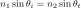
. For the transmitted angle reaches
the transmitted angle reaches 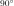
at the critical angle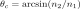
. - Beyond
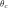
: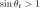
, so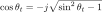
is imaginary. The Fresnel coefficients (Fresnel equations) become ratios of complex conjugates,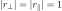
: reflection is total, only the phase changes. - Evanescent field in medium 2:
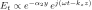
with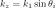
: it travels along the interface but carries no average power across it. Penetration depth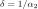
, a fraction of a wavelength except near .
Derivation of the phase shift
With  and Snell,
and Snell,
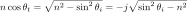
. For polarisation
polarisation 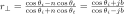
,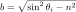
. Numerator and denominator are conjugates, so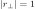
and the phase is twice the argument of the numerator: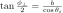
. The same steps with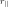
bring a factor under
under 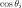
. The phase grows from 0 at to at grazing incidence;
at grazing incidence; 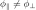
, so TIR turns linear light at 45° into elliptical light (Fresnel rhomb: two TIRs at 54.6° in glass give a quarter-wave retarder).Picture
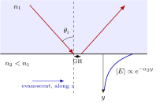
Worked examples
- Glass–air, 633 nm,
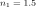
: ; Brewster from inside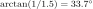
. At :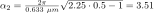
µm ,
, 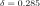
µm. Phases: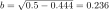
,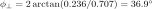
,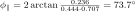
. Goos–Hänchen shift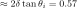
µm. - Fibre core–cladding, ,
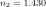
, 1550 nm: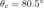
(measured from the normal). A ray at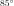
penetrates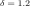
µm into the cladding: the field of a guided mode lives partly in the cladding, which is why the cladding must be low-loss and thick (> 10δ). - Lateral displacement of a ray crossing a glass plate of thickness
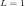
cm ( ) at
) at 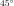
: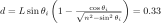
cm; the ray leaves parallel to itself.
Frustrated TIR and beam splitters
If a second medium of index
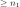
is brought within a few of the interface, the evanescent field becomes propagating again there: part of the light tunnels across the gap, with transmission falling roughly as
of the interface, the evanescent field becomes propagating again there: part of the light tunnels across the gap, with transmission falling roughly as 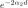
. The beam-splitter cube is two prisms with a thin low-index layer on the hypotenuse; choosing the gap sets the split ratio. The same physics couples two waveguides in a directional coupler and is the optical analogue of quantum tunnelling.Engineering applications
Light guiding in slab waveguides and fibres; reflecting prisms (binoculars, retroreflectors: no metal coating, 100% reflection); TIR fluorescence microscopy (TIRF) exciting only ≈ 100 nm above a cover slip; evanescent-wave sensors and couplers; fingerprint readers based on frustrated TIR.
Exam-style exercise
A right-angle prism of glass is used to turn a 1550 nm beam by 90°. (a) Is the reflection total? (b) Penetration depth? (c) If the prism is immersed in water (
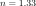
), does it still work?Solution
(a) Incidence on the hypotenuse is
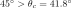
: yes. (b)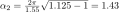
µm, 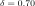
µm. (c)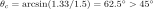
: no TIR: , Fresnel reflectance 1.9% (s) and 0.04% (p), so the beam mostly leaves the prism.Pitfall
The angle in TIR formulas is measured from the normal; in fibre problems the "bounce" angle is often given from the axis (
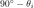
). Check which one the problem uses before computing or the NA.